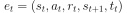
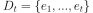
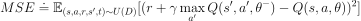

Deep Q-Network (DQN)¶
The paper on the deep Q-network (often abbreviated as DQN) is regarded as one of the most seminal papers on modern reinforcement learning 1. The research that came from DeepMind showed how a combination of Q-learning with deep neural networks can be applied to Atari games. The results were inspiring and groundbreaking in many respects, but the most important contribution of the paper was probably the rejuvenation of a field that seemed to be forgotten by the public. DQN spurred a research streak that continues up to this day.
Many of the solutions by the DQN seem to show creativity and even if you are not a reinforcement learning enthusiast, you will most likely find the playthroughs of Atari games by the DQN agent to be almost magical.
In this chapter we are going to explore the components that made the deep Q-network successful. We will look at how Atari games can be solved, but we are also going to explore solutions to other OpenAI gym environments, because those can be solved easier, especially if you do not possess a modern Nvidia graphics card.
Preprocessing¶
The Atari environment requires some additional preprocessing of observations and actions to make the learning process more efficient. The steps that we are going to undertake are described in the original paper. The OpenAI wrappers that we are going to implement are based on the “baselines” repository from OpenAI 2. Nowadays it is not necessary to implement those from scratch, as highly efficient and readily tested libraries are available 3. So instead of reinventing the wheel we should generally focus on the algorithm and not the preprocessing steps. That being said, especially when you look at the paper and the implementation for the first time it is advisable to work through the preprocessing steps.
If you are not interested in Atari environments and would prefer to solve for example the pole balancing task or the lunar lander task you can skip this section.
No-Op¶
The No-Op wrapper makes sure that when an episode ends and needs to be reset the first n steps are so called no-op actions. No-op (no operation) makes the agent basically do nothing. The number of no-op steps is calculated randomly and can take up to a maximum small number. The purpose of the wrapper is to sample slightly different observations at the beginning of an episode and to avoid the same initial state over and over again.
class NoopResetEnv(gym.Wrapper):
def __init__(self, env, noop_max=30):
"""Sample initial states by taking random number of no-ops on reset.
No-op is assumed to be action 0.
"""
gym.Wrapper.__init__(self, env)
self.noop_max = noop_max
self.noop_action = 0
assert env.unwrapped.get_action_meanings()[0] == 'NOOP'
def reset(self, **kwargs):
""" Do no-op action for a number of steps in [1, noop_max]."""
self.env.reset(**kwargs)
noops = np.random.randint(1, self.noop_max + 1)
assert noops > 0
obs = None
for _ in range(noops):
obs, _, done, _ = self.env.step(self.noop_action)
if done:
obs = self.env.reset(**kwargs)
return obs
def step(self, action):
return self.env.step(action)
Fire¶
Some Atari games do not actually start until you press the “Fire” button. Imagine a game where a ball has to start rolling before any other action can be performed. This wrapper performs exactly that. It calls the “Fire” action when a game is reset.
class FireResetEnv(gym.Wrapper):
def __init__(self, env):
"""Take action on reset for environments that are fixed until firing."""
gym.Wrapper.__init__(self, env)
assert env.unwrapped.get_action_meanings()[1] == 'FIRE'
assert len(env.unwrapped.get_action_meanings()) >= 3
def reset(self, **kwargs):
self.env.reset(**kwargs)
obs, _, done, _ = self.env.step(1)
if done:
self.env.reset(**kwargs)
obs, _, done, _ = self.env.step(2)
if done:
self.env.reset(**kwargs)
return obs
def step(self, action):
return self.env.step(action)
End Of Life¶
In some Atari games the player has several lives. In that case when one of the lives is lost the terminal flag is not set to true. Instead the player has to lose all his lives until he gets a terminal signal. In the bellman equation the terminal flag is needed to figure out if the value function for the next state should be set to 0. If the player loses one of his lives then the value for the next state is 0. Therefore the wrapper changes the terminal flag to true when one of the lives is lost.
class EpisodicLifeEnv(gym.Wrapper):
def __init__(self, env):
"""Make end-of-life == end-of-episode, but only reset on true game over.
Done by DeepMind for the DQN and co. since it helps value estimation.
"""
gym.Wrapper.__init__(self, env)
self.lives = 0
self.was_real_done = True
def step(self, action):
obs, reward, done, info = self.env.step(action)
self.was_real_done = done
# check current lives, make loss of life terminal,
# then update lives to handle bonus lives
lives = self.env.unwrapped.ale.lives()
if lives < self.lives and lives > 0:
# for Qbert sometimes we stay in lives == 0 condition for a few frames
# so it's important to keep lives > 0, so that we only reset once
# the environment advertises done.
done = True
self.lives = lives
return obs, reward, done, info
def reset(self, **kwargs):
"""Reset only when lives are exhausted.
This way all states are still reachable even though lives are episodic,
and the learner need not know about any of this behind-the-scenes.
"""
if self.was_real_done:
obs = self.env.reset(**kwargs)
else:
# no-op step to advance from terminal/lost life state
obs, _, _, _ = self.env.step(0)
self.lives = self.env.unwrapped.ale.lives()
return obs
Max Value and Skip Frame¶
Old Atari consoles did not have a lot of memory and only a limited amount of sprites could be drawn on the screen at the same time. The developers had to come up with techniques which were memory efficient on one side, but allowed relatively complex drawings on the other side. The idea that they implemented was to display one set of pixels on even frame numbers and the other set of pixels on the odd frame numbers. So at any point in time only half the pixels were displayed. This was not a problem for a human eye as Atari displayed 60 frames per second and we perceive the change of pixels at most as flickering. When researchers write about flickering they describe the problem that when the agent receives two successive observations they look completely different, because only half the pixels are available. The usual solution is to take the last two observations and to take the maximum pixel values from both frames.
Additionally, when a single frame passes in an Atari game not a lot of additional information has been incorporated in the frame and the agent is likely to make the same decision for the next state. Even if the agent makes a decision once every four frames, in a 60 frames per second environment the agent can take 15 actions during one single second. In the paper the researchers argued that more games can be played during a specific period if the agent takes the same action for a specific number of frames. The technique to skip frames is essentially a way to save resources, because an action from the agent requires additional computational resources.
Both ideas are incorporated in the gym wrapper below.
class MaxAndSkipEnv(gym.Wrapper):
def __init__(self, env, skip=4):
"""Return only every `skip`-th frame"""
gym.Wrapper.__init__(self, env)
# most recent raw observations (for max pooling across time steps)
self._obs_buffer = np.zeros((2,)+env.observation_space.shape, dtype=np.uint8)
self._skip = skip
def step(self, action):
"""Repeat action, sum reward, and max over last observations."""
total_reward = 0.0
done = None
for i in range(self._skip):
obs, reward, done, info = self.env.step(action)
if i == self._skip - 2: self._obs_buffer[0] = obs
if i == self._skip - 1: self._obs_buffer[1] = obs
total_reward += reward
if done:
break
# Note that the observation on the done=True frame
# doesn't matter
max_frame = self._obs_buffer.max(axis=0)
return max_frame, total_reward, done, info
def reset(self, **kwargs):
return self.env.reset(**kwargs)
Clip Reward¶
Different Atari games return different rewards. To make different environments consistent the rewards are clipped. Only values of +1, -1 and 0 are allowed. This allows the researcher to use the same learning rate for different Atari games.
class ClipRewardEnv(gym.RewardWrapper):
def __init__(self, env):
gym.RewardWrapper.__init__(self, env)
def reward(self, reward):
"""Bin reward to {+1, 0, -1} by its sign."""
return np.sign(reward)
Aspect Ratio¶
The original observation that the OpenAI gym Atari environments provide is a single frame, an image of the size 210x160x3. The height is 210 pixels, the width is 160 pixels and the 3 represents the number of channels, each containing either red, green or blue color values. To save computational power the researcher at DeepMind transformed each frame into a greyscale image of size 84x84. Our final image is going to be of size 1x84x84, because PyTorch convolutional layers expect a 3-dimensional input with the channel size in the first dimension.
class WarpFrame(gym.ObservationWrapper):
def __init__(self, env, width=84, height=84):
"""
Warp frames to 84x84 as done in the Nature paper and later work.
"""
super().__init__(env)
self._width = width
self._height = height
self.observation_space = gym.spaces.Box(
low=0,
high=1,
shape=(1, self._height, self._width),
dtype=np.float32,
)
def observation(self, obs):
obs = cv2.cvtColor(obs, cv2.COLOR_RGB2GRAY)
obs = cv2.resize(
obs, (self._width, self._height), interpolation=cv2.INTER_AREA
)
obs = np.expand_dims(obs, 0)
return obs
Stack Frames¶
A single image of the Atari game is not sufficient for the agent to take actions, because the observation is not Markovian. To alleviate the problem four greyscale images are stacked on top of each other.
class FrameStack(gym.Wrapper):
def __init__(self, env, k):
"""Stack k last frames"""
gym.Wrapper.__init__(self, env)
self.k = k
self.frames = deque([], maxlen=k)
shp = env.observation_space.shape
self.observation_space = gym.spaces.Box(low=0, high=1, shape=((k,)+shp[1:]), dtype=env.observation_space.dtype)
def reset(self):
obs = self.env.reset()
for _ in range(self.k):
self.frames.append(obs)
return np.array(self.frames).reshape(self.observation_space.shape)
def step(self, action):
obs, reward, done, info = self.env.step(action)
self.frames.append(obs)
obs = np.array(self.frames).reshape(self.observation_space.shape)
return obs, reward, done, info
New Environment¶
The below code shows how a new environment can be created by combining all the above wrappers.
def create_atari_env(name):
# original env
env = gym.make(name)
# reset env
if "FIRE" in env.unwrapped.get_action_meanings():
env = FireResetEnv(env)
env = NoopResetEnv(env, noop_max=30)
env = EpisodicLifeEnv(env)
# change reward
env = ClipRewardEnv(env)
# change observations
env = MaxAndSkipEnv(env, skip=4)
env = WarpFrame(env)
env = FrameStack(env, 4)
return env
Architecture¶
Thus far our Q function was of the form Q(s, a). The input of the function was a state action pair and the output was the corresponding q-value. The problem with that approach is the computational complexity. If we want to calculate what action leads to the maximum q-value we have to use the neural network as often as there are valid actions.
In the DQN paper the researchers used an architecture where the observation is the input to the neural network and the output layer has as many neurons as there are valid actions. Basically the Q function is of the form Q(s) where the output is a vector. To find the greedy action the agent can simply take the argmax of the output vector.
For example in the cart pole environment the input consists of 4 neurons, as the state of the environment consists of a 4 dimensional vector and the output is a two dimensional vector, as there are only two valid actions (move left or move right).
Fully Connected Architecture.¶
The architecture of Atari games is only slightly more complex. The first layers are convolutional neural networks, which are followed by fully connected layers.
CNN Architecture.¶
The parameters of the neural network correspond exactly to those described in the original paper.
class Q(nn.Module):
def __init__(self, n_actions):
super(Q, self).__init__()
self.model = nn.Sequential(
nn.Conv2d(in_channels=4, out_channels=32, kernel_size=(8, 8), stride=4),
nn.ReLU(),
nn.Conv2d(in_channels=32, out_channels=64, kernel_size=(4, 4), stride=2),
nn.ReLU(),
nn.Conv2d(in_channels=64, out_channels=64, kernel_size=(3, 3), stride=1),
nn.ReLU(),
nn.Flatten(),
nn.Linear(in_features=64*7*7, out_features=512),
nn.ReLU(),
nn.Linear(in_features=512, out_features=n_actions)
)
def forward(self, state):
return self.model(state)
Experience Replay¶
With traditional (naive) online q-learning each experience is thrown away as soon as it has been used for training. Even if experiences are collected and stored for future training the agent faces difficulties that are present in many reinforcement learning tasks. Sequential observations from a single episode are highly correlated with each other, which destabilizes training. The solution is to use a technique called experience replay.
Memory Buffer¶
The experience replay uses a data structure called memory buffer. Each experience tuple  (observation, action, reward, next observation and terminal flag) is stored in a data structure with limited capacity. At each time step the agent faces a certain observation, uses epsilon-greedy action selection and collects the corresponding reward. The whole tuple is pushed into the memory buffer  until the defined maximum length is achieved. At full capacity the memory buffer removes the oldest tuple.
The agent learns only from the collected experiences and never online. At each time step the agent gets a randomized batch from the memory buffer and uses the whole batch to apply stochastic gradient descent. Using experience replay the mean squared error can be defined as follows.
The maximum length of the buffer and the batch size depend on the task the agent needs to solve. In the paper memory size corresponded to 1,000,000 and batch size to 32. Depending on your hardware you might need to reduce the memory size.
Using randomized batches decorrelates observations used for training and thus stabilizes it. Batch size of 32 means that each observation is used on average 32 times before it is replaced by a newer one.
class MemoryBuffer:
def __init__(self, obs_shape, max_len, batch_size):
self.idx = 0
self.max_len = max_len
self.current_len = 0
self.batch_size = batch_size
self.obs = np.zeros(shape=(max_len, *obs_shape), dtype=np.float32)
self.action = np.zeros(shape=(max_len, 1), dtype=np.float32)
self.reward = np.zeros(shape=(max_len, 1), dtype=np.float32)
self.next_obs = np.zeros(shape=(max_len, *obs_shape), dtype=np.float32)
self.done = np.zeros(shape=(max_len, 1), dtype=np.float32)
def __len__(self):
return self.current_len
def add_experience(self, obs, action, reward, next_obs, done):
self.obs[self.idx] = obs
self.action[self.idx] = action
self.reward[self.idx] = reward
self.next_obs[self.idx] = next_obs
self.done[self.idx] = done
self.idx = (self.idx + 1) % self.max_len
self.current_len = min(self.current_len + 1, self.max_len)
def draw_samples(self):
idxs = np.random.choice(len(self), self.batch_size, replace=False)
obs = self.obs[idxs]
action = self.action[idxs]
reward = self.reward[idxs]
next_obs = self.next_obs[idxs]
done = self.done[idxs]
return obs, action, reward, next_obs, done
If you ask yourself why the approach we took with NFQ is not scalable, remember that we had to iterate over the whole available experience set. Once the set gets too large the iteration and training gets extremely slow. It is more efficient to replace old memories and to take a gradient descent step at each time step.
Frozen Target Network¶
The second problem that the agent faces is the correlation between the action-values  and the target values
and the target values  , because the same action-value function is used for the target value and the current action-value.
, because the same action-value function is used for the target value and the current action-value.
A different way to imagine the problem that arises from bootstrapping is to look at the below image.
Moving Target.¶
The yellow circle is the action-value function that is being updated. Through gradient descent the weights of the action-value function are updated in such a way that the action-values are closer to the rewards plus action-values for the next state (blue and yellow circles). But by changing the weights for the action-values we simultaneously change the values for the targets. To put it simply, the action-value function tries to catch up to a moving target. Therefore it is not surprising that we can experience divergence.
Two Value Functions.¶
The researchers at DeepMind introduced a second action-value function, where the weights of the target Q-function are frozen. That allows the action-value to catch up to the target values. After a given amount of update steps the weights from the action-value function are copied to the target function.
The final mean squared error calculation is defined as follows.

Agent¶
class Agent:
def __init__(self,
obs_shape,
n_actions,
batch_size,
memory_size,
update_frequency,
warmup,
alpha,
epsilon_start,
epsilon_steps,
epsilon_end,
gamma):
self.n_actions = n_actions
self.memory_buffer = MemoryBuffer(obs_shape, memory_size, batch_size)
self.device = torch.device('cuda:0' if torch.cuda.is_available() else 'cpu')
print(self.device)
self.online_network = Q(n_actions).to(self.device)
self.target_network = deepcopy(self.online_network).to(self.device)
for param in self.target_network.parameters():
param.requires_grad = False
self.optimizer = optim.RMSprop(self.online_network.parameters(), alpha)
self.epsilon = epsilon_start
self.epsilon_end = epsilon_end
self.epsilon_step = (epsilon_start - epsilon_end) / epsilon_steps
print(self.epsilon_step)
self.gamma = gamma
self.warmup = warmup
def adjust_epsilon(self):
self.epsilon -= self.epsilon_step
if self.epsilon < self.epsilon_end:
self.epsilon = self.epsilon_end
@torch.no_grad()
def epsilon_greedy(self, obs):
if np.random.rand() < self.epsilon:
action = np.random.choice(self.n_actions)
else:
action = self.greedy(obs)
return action
@torch.no_grad()
def greedy(self, obs):
obs = torch.tensor(obs, device=self.device, dtype=torch.float32).unsqueeze(dim=0)
return self.online_network(obs).argmax().item()
def store_memory(self, obs, action, reward, next_obs, done):
self.memory_buffer.add_experience(obs, action, reward, next_obs, done)
def batch_memory(self):
obs, action, reward, next_obs, done = self.memory_buffer.draw_samples()
obs = torch.tensor(obs, dtype=torch.float32).to(self.device)
action = torch.tensor(action, dtype=torch.int64).to(self.device)
reward = torch.tensor(reward, dtype=torch.float32).to(self.device)
next_obs = torch.tensor(next_obs, dtype=torch.float32).to(self.device)
done = torch.tensor(done, dtype=torch.float32).to(self.device)
return obs, action, reward, next_obs, done
def learn(self):
if len(self.memory_buffer) < self.warmup:
return
self.optimizer.zero_grad()
obs, action, reward, next_obs, done = self.batch_memory()
with torch.no_grad():
target = reward + self.gamma * self.target_network(next_obs).max(dim=1, keepdim=True)[0] * (1 - done)
online = self.online_network(obs).gather(dim=1, index=action)
td_error = target - online
loss = td_error.pow(2).mul(0.5).mean()
loss.backward()
self.optimizer.step()
self.adjust_epsilon()
def update_target_network(self):
self.target_network = deepcopy(self.online_network)
Main Training Loop¶
# parameters
env_name = 'BreakoutNoFrameskip-v4'
EPISODES = 100000
BATCH_SIZE = 32
MEMORY_SIZE = 100000
UPDATE_FREQUENCY = 10000
WARMUP = 1000
ALPHA = 0.00025
EPSILON_START = 1
EPSILON_END = 0.1
EPSILON_STEPS = 100000
GAMMA = 0.99
# training loop
def main():
env = create_atari_env(env_name)
agent = Agent(
env.observation_space.shape,
env.action_space.n,
BATCH_SIZE,
MEMORY_SIZE,
UPDATE_FREQUENCY,
WARMUP,
ALPHA,
EPSILON_START,
EPSILON_STEPS,
EPSILON_END,
GAMMA
)
counter = 1
for episode in range(EPISODES):
obs = env.reset()
done = False
reward_sum = 0
while not done:
counter+=1
action = agent.epsilon_greedy(obs)
next_obs, reward, done, info = env.step(action)
agent.store_memory(obs, action, reward, next_obs, done)
obs = next_obs
agent.learn()
if counter % UPDATE_FREQUENCY == 0:
print("Updating")
agent.update_target_network()
reward_sum += reward
print(f'Episode: {episode}, Counter: {counter}, Epsilon: {agent.epsilon}, Reward: {reward_sum}')
Sources¶
- 1
Mnih, V., Kavukcuoglu, K., Silver, D. et al. Human-level control through deep reinforcement learning. Nature 518, 529–533 (2015). https://doi.org/10.1038/nature14236
- 2
OpenAI Baselines. https://github.com/openai/baselines
- 3
Look for example at SuperSuit. https://github.com/PettingZoo-Team/SuperSuit